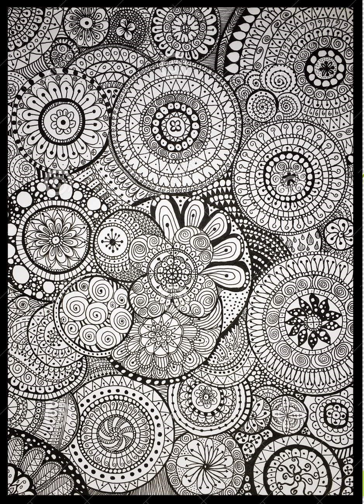
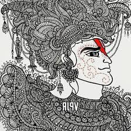
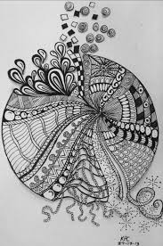

A zendoodle is a drawing created out of doodled patterns to create a recognisable object or just an interesting abstract picture. The overall result is not constrained by certain methods like Zentangles usually are. Zendoodles are much more organic, or freestyle, in nature.
Drawing a zendoodle can put you into a zen-like state of mind. It is calming and can be used as a mindfulness technique. In below some amazing ZENDOODLING are attached.Let's have a look!!
Picturs of Zendoodling



Some patterns of Zentangle Art
How to draw some simple patterns of zentangle art easily